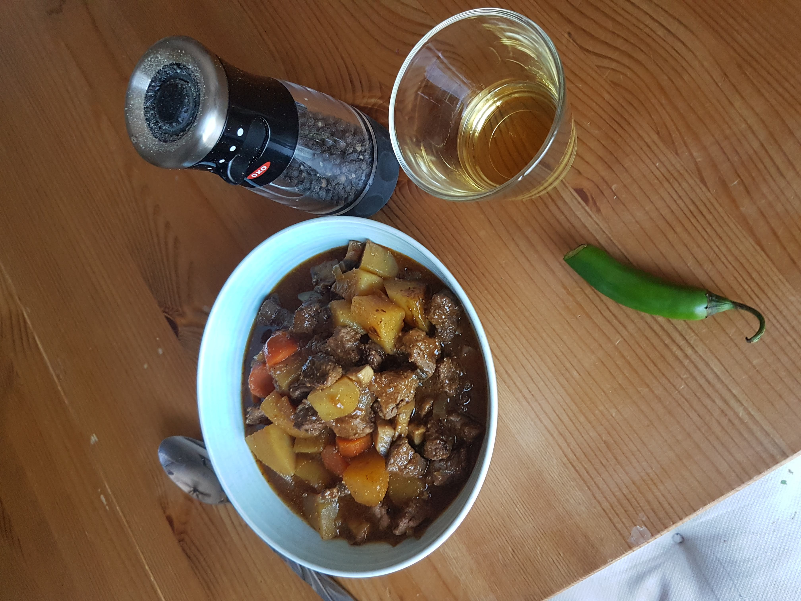

Moose Stew Recipe

Description
This is my favorite dish to make during the colder months in Alberta. It warms the soul, and goes down especially good with some scotch and a hot pepper. When your bowl is empty, make sure you clean it up with some sourdough bread.
Ingredients:
- moose meat
- 10 baby potatoes
- 4 cups of beef broth
- salt & pepper to taste
- 2 tbsp of butter
- 1 onion
- 2 cloves of garlic
- 1 heaping tbsp of tomatoe paste
- 1 cup of beer or red wine
- 1 tbsp of flour
- 3 carrots
- 2 stalks of celery
- 2 bay leaves
- 8 ounces of mushrooms
- 1-2 tbsp of rosemary or thyme
Steps:
- Salt/pepper and flour the meat.
- Brown the meat on Medium heat for 8-10 minutes.
- Remove meat from pan. Reduce heat to medium-low, add butter and then mushrooms. Cook for 2-3 minutes.
- Add onion and celery. Cook for 5 minutes.
- Season the mixture with salt/pepper/parsley and add garlic.Cook for 1-2 minutes.
- Season the mixture with salt/pepper/parsley and add garlic.Cook for 1-2 minutes.
- Add flour and cook for a minute.
- Add tomato paste and cook for another minute.
- Add wine or beer and let it cook for 2 minutes.
- Add bouillon and browned stew meat. Cook for another minute.
- Add vegetables and mix well.
- Slowly add beef broth and add bay leaves.
- Let it simmer for 1-2 hours on low heat, stirring occasionally.